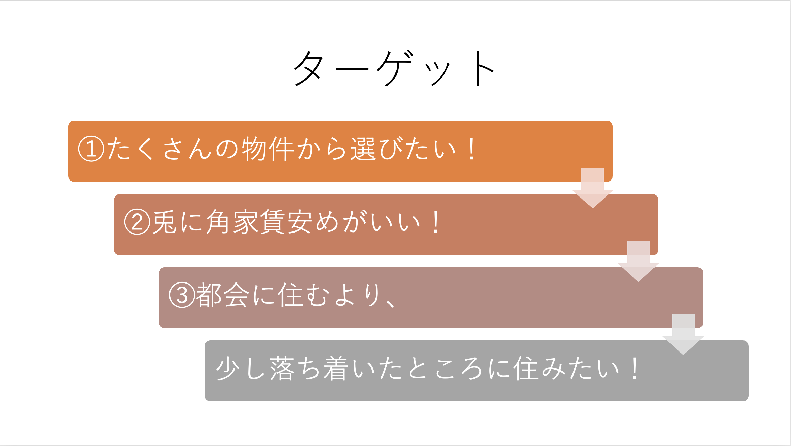
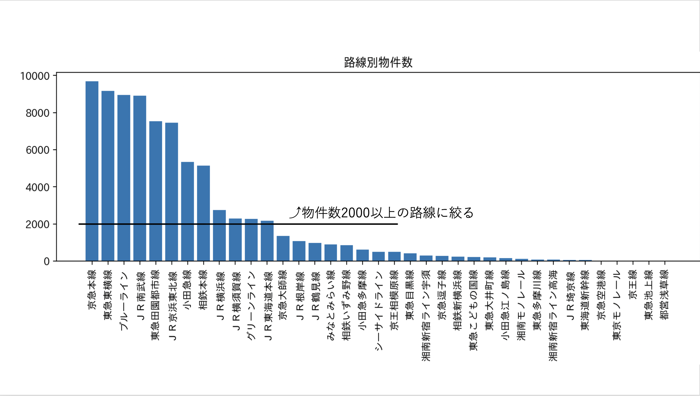
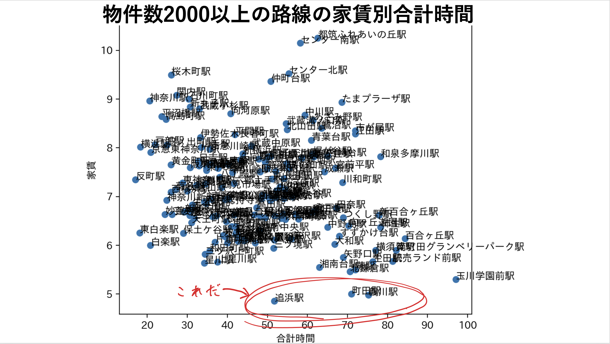
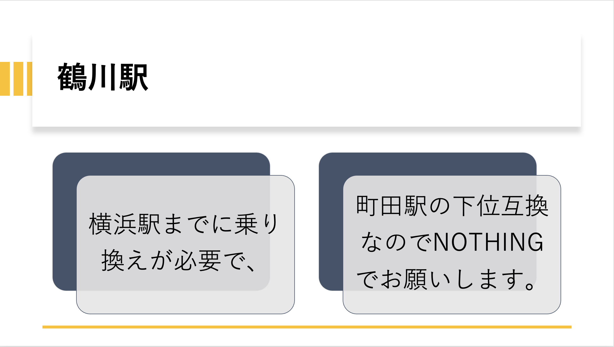
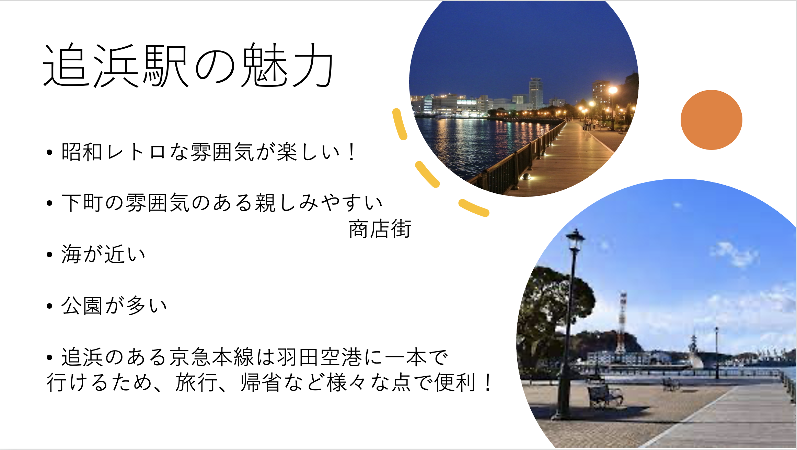
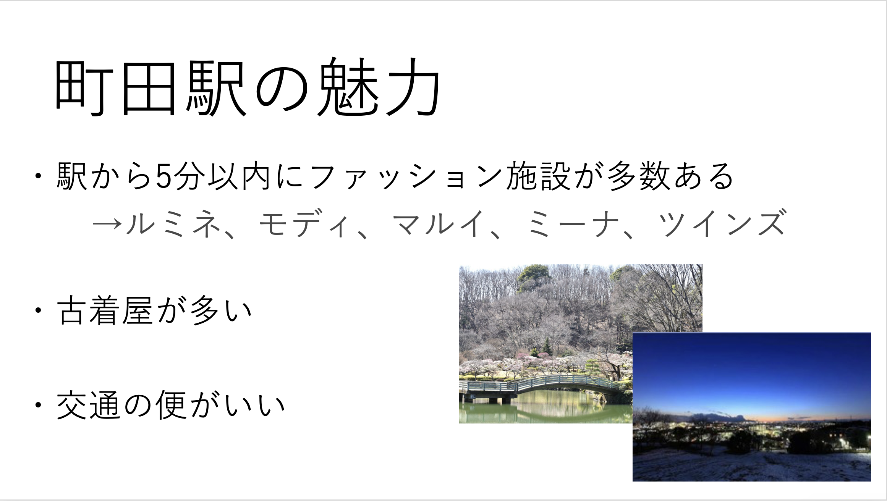
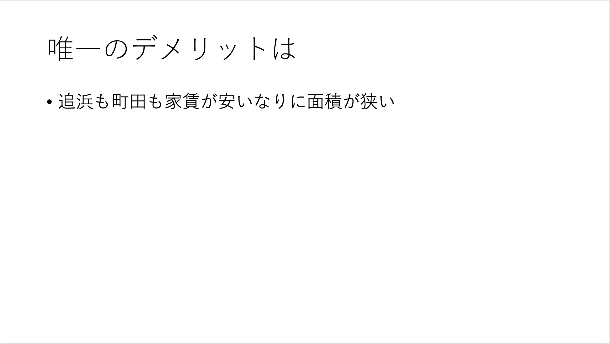

[賃貸情報の分析]







渋谷店や新宿店で品切れのものが町田店にはしれっと残っていることがある！
古着屋は他人と服が被りたくない人におすすめです！
町田・新宿間は35分。横浜駅まで30分。箱根湯本まで1時間20分。江ノ島まで40分。そのため休日に観光地に行きやすい。
さらに町田は、小田急ロマンスカーが通っているため、休日などに気軽に箱根などに行きやすい。その為、都心へのアクセスが良い！
写真の新東京百景、日本の公園100選、さらに東京都指定名称にも選ばれている「薬師池公園」は、町田を代表する公園の一つです。

URL
PowerPoint